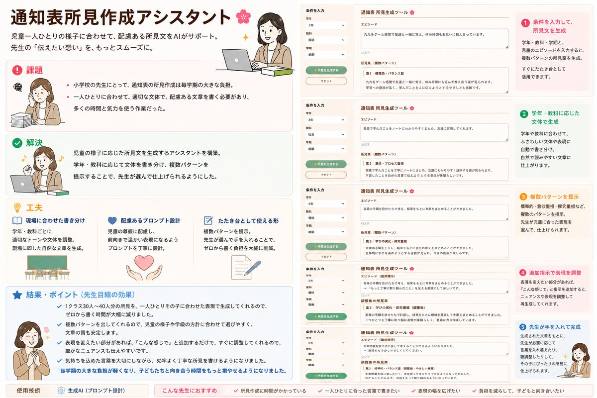
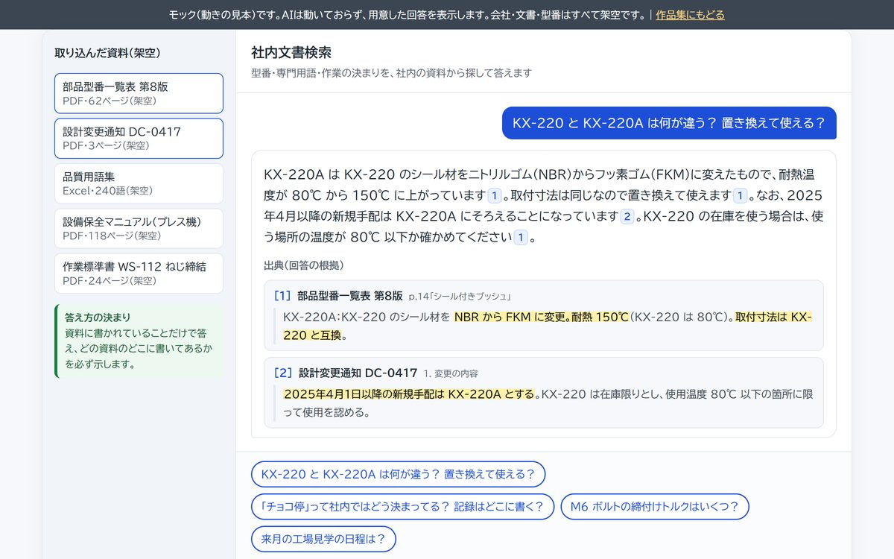
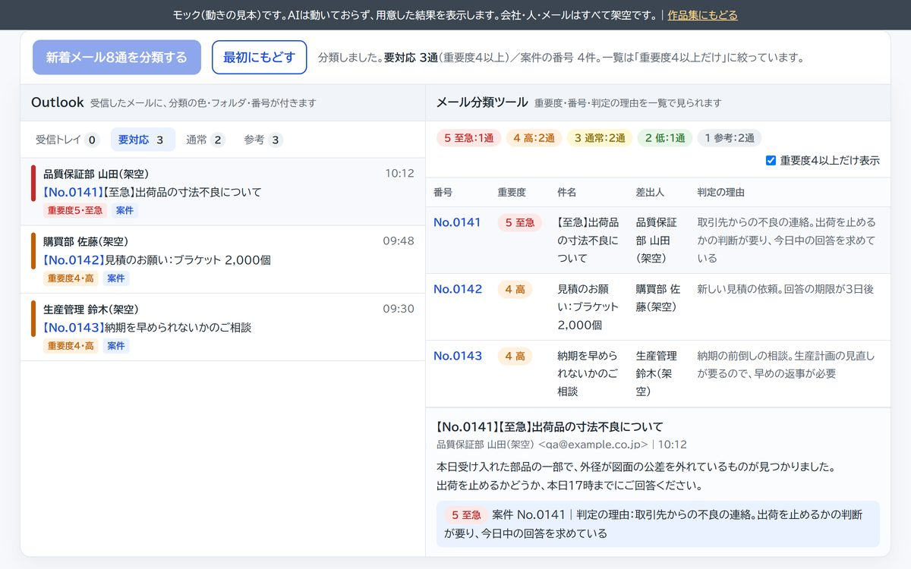
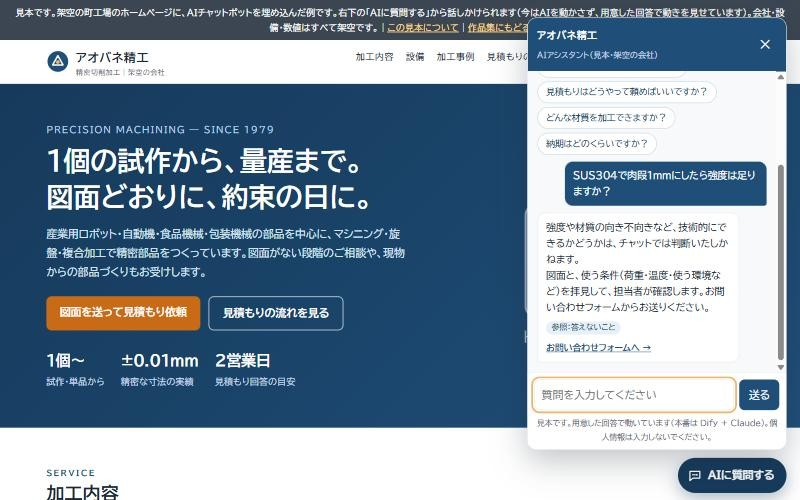
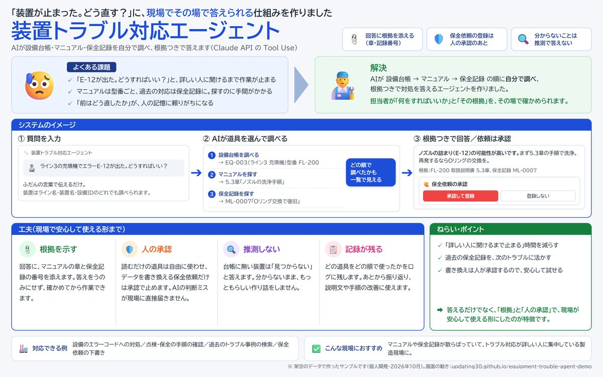
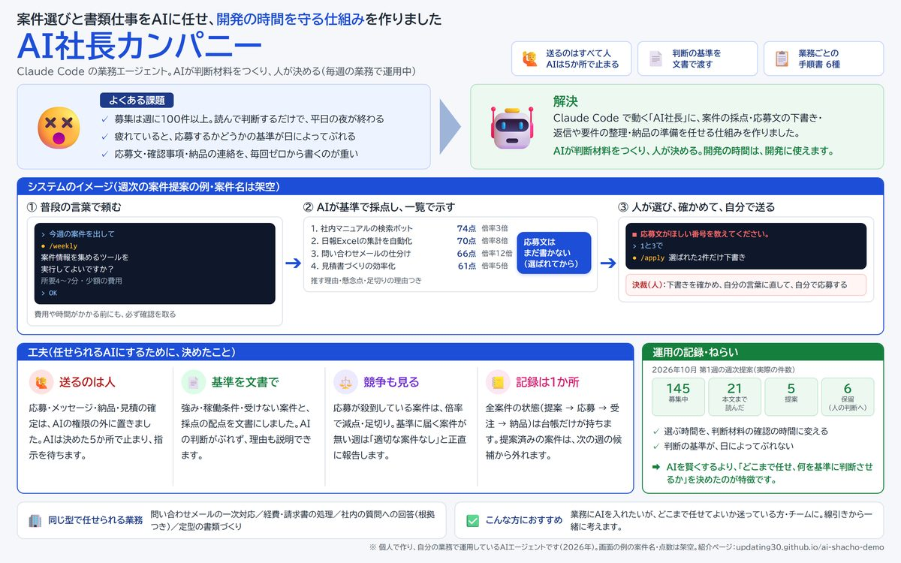
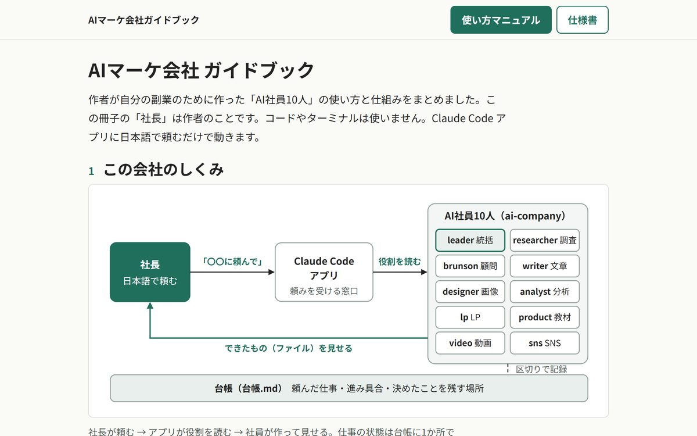
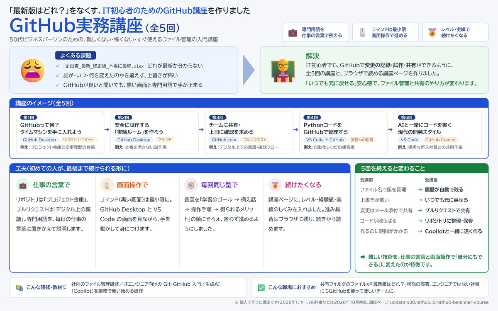
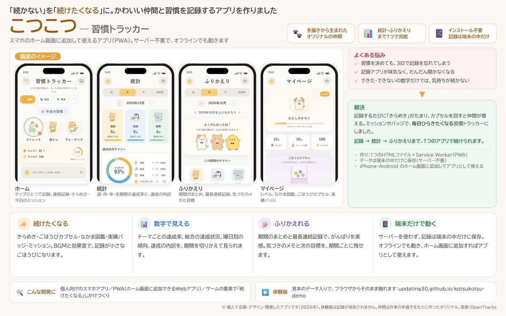

AIの文章作成アシスタント（Claude API）｜社外の方に提供し、実務で利用
通知表所見作成アシスタント
学年・教科・学期と児童のエピソードを入れると、AIが性格の違う所見案を3つ出します。先生は案を選んで手を入れるだけで、「案2をベースに…」と会話で直すこともできます。現役の教員に提供し、1クラス約40名分の所見づくりが2週間から1日になりました。
製造業のシステム開発に20年以上たずさわってきたエンジニアの作品集です。要件がまだ曖昧な段階からお話を伺い、小さく作って試していただきながら、実務で本当に使われるところまで一緒に育てます。
社外の方の仕事や社内の業務で、実際に使われているものです。
現役の教員に提供し、実務で使われています。児童一人ひとりの様子に合わせ、学年・教科別の文体で複数の案を出します。「以前より一人ひとりに合った所見が書けるようになった」との声をいただきました。
社外の方に提供社内文書をもとに、質問へ出典つきで答えます。回答の根拠を必ず示すので、内容を確かめてから使えます。企画・設計から実装、リリース、運用まで一人で担当しました。
社内でリリースし、運用中受信メールをAIが重要度5段階で自動分類し、自動で採番します。優先すべきメールだけを拾える状態にしました。企画・設計から実装、リリース、運用まで一人で担当しました。
社内でリリースし、運用中※ 実際のツールは公開していません。3つとも、架空のデータで動く画面の見本を用意しました（社内の2つは、画面とデータを架空のものに置きかえています）。
個人で作った作品です。コードは公開せず、画面の見本・設計の資料・体験版で紹介しています。データはすべて架空です。

学年・教科・学期と児童のエピソードを入れると、AIが性格の違う所見案を3つ出します。先生は案を選んで手を入れるだけで、「案2をベースに…」と会話で直すこともできます。現役の教員に提供し、1クラス約40名分の所見づくりが2週間から1日になりました。

型番・専門用語・作業の決まりを社内の資料から探し、出典つきで答えます。回答の番号を押すと、根拠の箇所が光ります。本業の社内でリリースし、調査時間を2時間から5分にしたツールを、架空の資料で再現しました。

受信メールを AI が重要度5段階で分け、案件のメールに番号を振って、ツールの一覧と Outlook（分類の色・フォルダ・件名）に出します。案件メールの対応漏れをゼロにしたツールを、架空のメールで再現しました。



案件選び・応募文の下書き・返信や要件の整理・納品の準備をAIに任せる仕組みです。自分の業務で毎週運用しています。AIが判断材料をつくり、決めるのも外部へ送るのも人です。

制作・リサーチ・執筆・動画・SNS を、役割を持つ10人の AI 社員に任せる仕組みです。アプリに日本語で頼むだけで動き、字幕の焼き込みや Instagram 原稿の文字数チェックなどの道具も自作しました。使い方マニュアルと仕様書を公開しています。

IT初心者のビジネスパーソン向けに、GitHubでのファイル管理を学ぶ講座です。専門用語を仕事の言葉に置きかえ、画面操作だけで進められます。最終回は生成AI（GitHub Copilot）との共同作業です。

「習慣が続かない」を「続けたくなる」に変えるアプリを、企画・デザイン・開発しました。記録・統計・ふりかえりに、仲間集めやバッジなどのしかけを組み合わせています。
作ることやツールを入れることが目的ではなく、業務がよくなることが目的です。
お仕事のご相談は、このページをご覧になったサービス（クラウドソーシングなど）のメッセージ機能からお願いします。要件がまだ曖昧な段階でも大丈夫です。